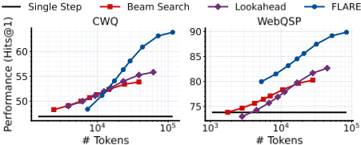
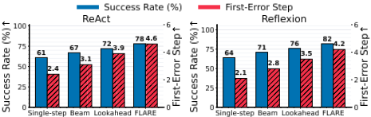
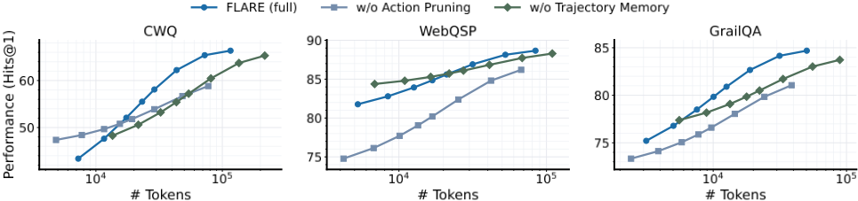
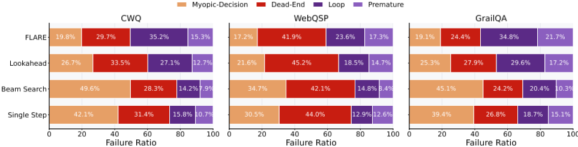

Why Reasoning Fails to Plan: A Planning-Centric Analysis of Long-Horizon Decision Making in LLM Agents
为什么推理无法规划：LLM Agent 长程决策的规划中心分析
简介
论文回答'为什么推理不等于规划'：作者把 CoT 等逐步推理形式化为基于局部评分的 step-wise greedy policy，在确定性、状态与转移完全显式的受控环境（KGQA 的 oracle-structure 设定及 ALFWorld 工具调用）中诊断出长程失败的共同机制——早期短视承诺被逐步放大且几乎不可恢复。理论上证明逐步贪心的次优差距可任意大、任意宽度的 beam search 仍可能第一步就剪掉最优路径，而仅一步 lookahead 即可严格改进最坏情况保证。据此提出 FLARE：用 MCTS 实现显式前瞻、轨迹级价值反向传播与 receding-horizon 有限承诺，辅以 Action Pruning 与 Trajectory Memory 控制成本。实验显示 FLARE 在多基准、多框架、多骨干上一致领先，LLaMA-8B+FLARE 常胜过 GPT-4o+逐步推理，Trap@1 从 55.6% 降至 17.8%、错误后恢复率从 5.4% 升至 29.7%。
问题
LLM Agent 逐步推理能力强但在长程任务中行为失稳。论文要回答：在排除环境不确定性（确定性环境、显式状态与转移、规划时可用评估信号）之后，逐步推理式决策是否在结构上不足以支撑长程一致规划；若是，可靠的长程规划至少需要哪些最小机制，以及如何用最小构造验证推理与规划的本质区别。
方法
三部分：(1) 受控诊断——将 LLM 推理形式化为 step-wise greedy policy，在 KGQA（CWQ/WebQSP/GrailQA，oracle 子图保证有解）上对比 single step、beam search、shallow lookahead 三种策略，并离线构造 myopic traps 做因果干预；(2) 理论分析——三个命题证明逐步贪心可任意次优、beam search 无法避免剪掉最优前缀、一步 lookahead 严格扩展规划能力，并给出截断 k-lookahead 的次优界；(3) FLARE——基于 MCTS 的最小规划机制：UCB 式规则分配模拟、LLM 提议动作并 top-k 剪枝、LLM 对整条轨迹做相对偏好评分（而非逐步打分）、轨迹回报反向传播更新 Q 值、receding-horizon 每步只承诺下一个动作并重规划，另有有界 Trajectory Memory 复用相似轨迹评分以摊薄评估成本。
关键结果
在 CWQ、WebQSP、GrailQA 三个 KGQA 基准、四种 LLM 骨干（LLaMA-3.1-8B/70B、GPT-4o-mini、GPT-4）与 ToG/PoG 两种框架上，FLARE 一致优于 single step、beam search 与 shallow lookahead，并达到与 SOTA MCTS/KGQA 方法相当或更优的 Hits@1（具体数值见表 1/2，正文未逐项列出）
LLaMA-8B 配合 FLARE 常常超过使用标准逐步推理的 GPT-4o
机制级指标（多数据集聚合）：Trap@1 从 single step 的 55.6% 降至 FLARE 的 17.8%（beam search 反而升至 71.9%，lookahead 为 23.6%）；首次错误位置从平均 1.6 步推迟至 3.2 步；首次错误后恢复率从 5.4% 升至 29.7%（beam search 11.4%、lookahead 22.4%）
ALFWorld 工具调用环境（ReAct/Reflexion 骨干、GPT-4o-mini、200 个任务）中，FLARE 取得最高成功率并显著推迟首次不可逆错误，是唯一同时具备显式前瞻、价值传播与 receding-horizon 承诺三组件的方法
效率消融：移除 Action Pruning 后需近 3 倍 token 才能恢复同等精度（CWQ 上翻倍以上、WebQSP 上约三倍）；移除 Trajectory Memory 在同等 token 预算下精度一致下降、相近精度下 token 用量明显上升
理论结果：step-wise greedy 的次优差距可任意大（Prop 3.1）；任意宽度 beam search 可在第 1 步剪掉唯一最优轨迹（Prop 3.2）；一步 lookahead 在最坏情况下严格优于所有 step-wise 策略（Prop 3.3）；截断 k-lookahead 的次优差距随 H/(k+1) 线性增长（Prop B.1）
创新点
区别于把长程失败当作经验现象的已有工作（ReAct、Reflexion、ToT、各类 MCTS-LLM 与 RL 训练的 Agent），本文贡献是概念与理论层面的：把 LLM 推理建模为 step-wise greedy policy，给出最坏情况下的形式化失败证明，并提出机制级诊断（trap 选择率、首次错误位置、错误后可恢复性）来严格区分'推理'与'规划'。作者自述贡献是 conceptual rather than algorithmic：FLARE 是这些规划原则的最小实例化（MCTS + receding horizon），而非新搜索算法。
团队参考意义
相关度级别：high
命中能力域：3.3 Agent 架构与工具使用 | 3.5 评测与可靠使用
理由：直接命中 3.3：论文核心是 Agent 的决策机制与 harness 设计——诊断逐步推理式 agent loop 的结构性缺陷，给出显式前瞻、价值反向传播、receding-horizon 有限承诺三个可落地的 loop 设计原则，并在 ReAct/Reflexion 等常用框架与工具调用环境（ALFWorld）上验证。同时命中 3.5：提供了一套把'决策机制失败'与'环境失败'分离的受控评测方法学，以及 Trap@1、First-Error Step、Recovery@First-Error 等机制级指标和 token 预算-性能权衡分析，可直接用于团队 Agent 评测体系与成本优化。论文不涉及模型训练，与团队'用好模型'的定位完全一致。
建议动作：深入精读并做内部分享
中文全文
arXiv:2601.22311v1 [cs.AI] 2026年1月29日
Why Reasoning Fails to Plan: A Planning-Centric Analysis of Long-Horizon Decision Making in LLM Agents
Zehong Wang 1 Fang Wu 2 Hongru Wang 3 Xiangru Tang 4 Bolian Li 5 Zhenfei Yin 6 Yijun Ma 1 Yiyang Li 1 Weixiang Sun 1 Xiusi Chen 7 Yanfang Ye 1
Abstract
基于大语言模型（LLM）的 Agent 在短时域内展现出强大的逐步推理能力，但在长规划时域上往往难以维持连贯的行为。我们认为，这种失败反映了一种根本性的错配：逐步推理会诱导出一种逐步贪心策略，该策略足以应对短时域任务，却在长时域规划中失效，因为在这类规划中，早期动作必须顾及延迟显现的后果。从这一以规划为中心的视角出发，我们在具有显式状态转移和评估信号的确定性、完全结构化环境中研究基于 LLM 的 Agent。我们的分析揭示了基于推理的策略的一个核心失败模式：由逐步评分所诱导的局部最优选择会导致早期的短视承诺，这些承诺会随时间被系统性放大，且难以从中恢复。我们提出 FLARE（Future-aware Look Ahead with Reward Estimation），作为未来感知规划的一种最小化实例，在单一模型中强制实现显式前瞻、价值传播与有限承诺，使下游结果能够影响早期决策。在多个基准测试（benchmark）、Agent 框架和 LLM 骨干模型上，FLARE 均能持续提升任务性能与规划层面的行为，并常常使配备 FLARE 的 LLaMA-8B 超越采用标准逐步推理的 GPT-4o。这些结果在推理与规划之间确立了清晰的区分。
1. Introduction
基于大语言模型（LLM）的 Agent 已展现出令人瞩目的逐步推理能力（Wei et al., 2022; Wang et al., 2023a; Yao et al., 2022b; Shinn et al., 2023; Wu et al., 2024a; Xi et al., 2025b）。然而，越来越多的实证证据表明，具备强推理能力的模型在需要长程决策的任务上表现不佳（Duan et al., 2024; Jin et al., 2024）。这一差异指向一个根本性的概念鸿沟：推理并非规划。从规划的视角出发，我们认为标准的 LLM 推理，例如思维链（chain-of-thought, CoT）（Wei et al., 2022），可以被视为一种基于局部分数（例如下一步合理性）的逐步贪心策略。这类推理虽然能够选择局部合理的动作，却无法依据长期后果重塑早期决策，因为局部最优的动作在长程上可能导致糟糕的结果。将这两种能力混为一谈，会导致长程任务中的系统性失败。
1 圣母大学 2 斯坦福大学 3 爱丁堡大学 4 耶鲁大学 5 普渡大学 6 牛津大学 7 伊利诺伊大学香槟分校（UIUC）。通讯作者：Zehong Wang < zwang43@nd.edu > ，Yanfang Ye < yye7@nd.edu > 。
在实践中，这种不匹配表现为脆弱的长程行为。在未见过的环境中，早期的小错误往往会不断累积：轨迹变得比必要的更长（Yao et al., 2022b; Huang et al., 2022），决策失去内部一致性（Yao et al., 2023a; Park et al., 2023），而看似局部合理的动作在执行时却会失败（Song et al., 2023; Wu et al., 2024b）。尽管自我反思（self-reflection）（Shinn et al., 2023; Madaan et al., 2023）、自举（bootstrapping）（Wang et al., 2023b; Zelikman et al., 2022）和自我改进（self-improvement）（Wang et al., 2024a）等技术能够减少局部错误，它们仍然停留在同样的逐步决策框架之内，基于局部信号选择动作，而未对结果进行显式评估。这引出了一个核心问题：基于 LLM 的 Agent 究竟能够真正进行长程规划，还是只能对下一步进行局部推理？
回答这一问题颇具挑战性，因为长程任务交织着多重困难来源。它们由后果驱动（Song et al., 2023），通常提供延迟或稀疏的反馈（Xi et al., 2025a; Shridhar et al., 2021; Yao et al., 2022a），并且通常是部分可观测或随机的（Ahn et al., 2022）。这些因素使人难以判断，失败究竟源于环境的复杂性，还是源于 Agent 自身决策机制的局限。
为了厘清这些效应，我们采用一种控制变量的诊断性设置：具有显式状态表示、已知转移动力学、且在规划时即可获得评估反馈的确定性环境。这一设置消除了环境侧的不确定性，从而将智能体侧的决策过程分离出来。在这一受控设置中，我们的实证与理论分析揭示出一种一致的失败模式。即使状态与评估信号是显式的，由具有逐步信号的策略所引导的智能体在长程规划中仍会面临系统性失败，因为它们偏好局部上具有吸引力的动作，而这些动作可能导致长程失败。早期偏差随后会随时间不断放大，随着规划时域的增长而导致性能迅速退化（Yu et al., 2020; Wei et al., 2022; Besta et al., 2024）。至关重要的是，这种失败反映了逐步贪心决策的结构性局限（Liu et al., 2023a; Cemri et al., 2025）：一旦动作基于局部信号被选定，早期承诺便难以修订，从而使智能体被锁定在不可逆的轨迹中（Xi et al., 2025b; Yao et al., 2023b）。
预印本。2026 年 2 月 2 日。
这一诊断凸显了基于推理的策略的一个根本性局限：仅靠改进局部推理不足以产生连贯的长程规划，无论这种推理是通过提示、束搜索还是强化学习获得的。相反，连贯的规划需要三种最小机制：显式前瞻、反向价值传播，以及通过滚动时域重规划实现的有限承诺。现有的推理范式至少违反了其中一项要求：例如，思维链（CoT）与束搜索（Snell et al., 2024）缺乏显式的未来评估与价值传播；Reflexion（Shinn et al., 2023）与 ReAct（Yao et al., 2022b）缺乏显式前瞻；强化学习（Guo et al., 2025a）通过将长程决策嵌入模型参数而离线地执行规划，因此缺乏对早期承诺的在线修订。
受这一洞察的启发，我们提出了 FLARE（Future-aware Look Ahead with Reward Estimation），一个以最小化方式实例化上述设计原则的规划框架。FLARE 执行显式前瞻（lookahead）以评估反事实的未来轨迹，将轨迹层面的结果向后传播以指导早期决策，并在滚动时域（receding-horizon）机制下仅对下一步动作做出承诺。FLARE 并未引入额外的启发式方法，而是作为未来感知规划的一种典范构造，展示了一旦强制实施这些最小化机制，连贯的长时程行为便能够涌现。在多个基准测试（benchmark）、Agent 框架和 LLM 骨干模型上，FLARE 持续缓解了我们在诊断中识别出的长时程失败，常常使较小的模型超越采用基于推理策略的较大模型。更广泛地说，我们的研究结果表明，基于 LLM 的 Agent 的长时程失败反映了推理与规划之间的根本性差距。
我们的主要贡献如下：
2. Problem Definition
我们从规划优先（planning-first）的视角研究基于 LLM 的 Agent 中规划与推理之间的关系。我们将 LLM 推理形式化为规划策略的一个特定类别：逐步贪心策略（step-wise greedy policy），即基于推理的策略（reasoning-based policy），其中 Agent 仅依据当前状态的局部评估来选择动作。这一形式化使我们能够在显式环境下，将基于推理的策略与纳入显式长期评估的规划机制进行比较。
为了实现这种比较，我们考虑一个受控环境，其中转移动力学与评估反馈在规划时是显式的，从而将 Agent 的决策机制与环境侧的不确定性隔离开来。
环境（Environment）。我们将环境建模为确定性状态转移系统 G = ( S , A , T, ˆ r )，其中 S 为离散状态空间，A 为动作空间，T : S×A → S 为转移函数。在状态 s_t 处，Agent 选择 a_t ∈ A ( s_t )，从而产生轨迹
评估信号 ˆ r : S × A × S → R 在规划时即可获得，累积回报为
![Figure 1. Planning performance and early myopia under increasing horizons. Top : Accuracy (Hits@1) on CWQ and WebQSP by required planning horizon. Performance degrades rapidly for single step (i.e., reasoning-based policy) and beam search as the horizon increases, while lookahead degrades more slowly. Bottom : Myopic trap selection at the first decision step. Step-wise scoring (single step and beam search) frequently selects actions with high immediate scores but poor long-term outcomes, whereas lookahead suppresses such traps via future-aware evaluation.](assets/a254/figures/fig_1.png)
Agent 策略（Agent Policy）。我们将 Agent 行为抽象为策略 π : S → A。基于推理的策略选择
其对应于基于局部评估的逐步贪心规划。束搜索（beam search）通过在 top-k 动作中进行选择来扩展这一范式，而前瞻（lookahead）则引入有限的轨迹推演来估计未来回报。
问题陈述（Problem Statement）。我们提出这样的问题：即便完整的状态信息、转移动力学与评估反馈均显式可用，此类逐步贪心规划策略（即推理）是否仍能支持连贯的长时程决策。如果不能，这便确立了基于推理的决策与基于规划的决策之间的结构性区别，表明规划能力无法被还原为逐步推理。
3. Failure Modes of Long-Horizon Planning
我们证明，纯推理的长时程失败源于基于推理的策略本身的结构性局限，而非环境不确定性或模型容量。在确定性且完全结构化的环境中，基于推理的策略会系统性地引入早期的短视偏差，这些偏差随时间不断放大，最终导致不可逆的轨迹崩溃。我们通过性能退化、局部决策偏差、首次错误的位置以及错误后可恢复性来刻画这一机制。将显式前瞻（lookahead）与轨迹级评估相结合，能够显著缓解所有观察到的失败模式。
3.1. Empirical Analysis of Planning Failures
我们以知识图谱问答（KGQA）(Chen et al., 2024; Sun et al., 2024) 作为评估沙盒来实例化长时程规划，其中 Agent 行为对应于多跳图遍历。实验在 CWQ (Talmor & Berant, 2018) 和 WebQSP (Yih et al., 2016) 上进行，二者具有不同的最短路径长度分布，从而能够在不同时程上开展分析。为了隔离 Agent 侧的决策机制，我们采用 oracle 结构设置 (Sun et al., 2024)，其中每个查询都配有一个保证包含有效解路径的子图。在所有实验中，我们固定 LLM 骨干模型¹、Agent 架构与评估信号，仅改变规划策略。我们考虑三种范式：(i) 通过贪心逐步选择实现的基于推理的策略（single step），(ii) 宽度扩展推理（beam search），以及 (iii) 结合 rollout 评估的浅层基于规划的策略（lookahead）。结果如图 1 和图 2 所示，更多细节见附录 E。
观察 1：长时程崩溃是基于推理策略的失败。在所有数据集上，随着所需规划时程的增加，准确率迅速下降（图 1，上）。single step 在超出浅层实例后急剧退化，beam search 仅能带来有限且短暂的改进。相比之下，lookahead 始终保持更高的准确率，且退化更慢。这表明，长时程失败并不仅仅是更长轨迹的后果，而是依赖于逐步贪心策略的后果。
1 默认使用 LLaMA 3.1 8B (Grattafiori et al., 2024)。
观察 2：基于推理的策略会诱发系统性的早期短视。我们构建了短视陷阱（myopic traps）：即在逐步评分下局部最优、但会导向全局次优区域的动作。在第一个决策步，贪心策略和基于 beam search 的策略都以很高的比率选择此类动作（图 1，下），表明局部信号无法编码下游效用。lookahead 通过纳入未来的 rollout 大幅抑制了这一偏差。因果干预证实了这一机制：强制正确的首步动作会使各策略的性能趋于一致，而强制选择陷阱动作则导致普遍失败。因此，早期的短视承诺是基于推理策略长时程退化的主要来源。
观察 3：基于推理策略下的错误实际上是不可逆的。基于推理的策略和基于 beam search 的策略通常在前几次决策内就偏离最优轨迹，且此后很少恢复（图 2）。增加搜索宽度会延迟、但无法阻止对次优前缀的不可逆承诺。相比之下，lookahead 既推迟了首次错误的发生，又在所有阶段显著提升了恢复能力。这表明，未来感知的评估（即基于规划的策略）不仅对避免早期错误必不可少，对在错误发生后实现纠正性修订同样必不可少。
3.2. Fundamental Limits of Reasoning-based Policy in Long-Horizon Planning
对于任意固定的 beam 宽度，都存在这样的环境：最优轨迹在第一次决策之后、任何有信息量的未来奖励被观测到之前，就被不可逆地剪枝。因此，beam search 通过扩展宽度来延迟承诺，但当排序由局部分数驱动时，它无法阻止全局最优路径被过早淘汰。这与如下经验诊断相一致：beam search 能够缓解、但无法解决长时程失败。
结果 3：即便是极小限度的 lookahead（基于规划的策略）也能严格扩展规划能力。我们现在证明，上述局限并非有限时域决策本身所固有，而是源于缺乏显式的未来感知规划。哪怕仅引入单步 lookahead，也会从根本上改变 Agent 在最坏情况下所能取得的成就。
命题 3.3. 考虑一种 lookahead 策略：其在状态 s 处，通过在真实转移函数 T 下模拟深度至多为 k ≥ 1 的轨迹来评估每个候选动作 a ∈ A(s)，并选择使由此得到的累积回报估计最大化的动作。则存在一类确定性环境，使得：(i) 任何仅依据逐步替代分数来选择动作的策略所获回报均为零；且 (ii) k = 1 的 lookahead 策略能够取得最优回报。由此，即便仅有一步 lookahead，在最坏情况性能保证方面也严格支配逐步决策。
命题 3.3 在基于推理的策略与基于规划的策略之间建立了一个严格的区分。存在这样一些环境：其中所有仅基于逐步替代分数的策略都可被证明会失败，而具有单步 lookahead 的策略却能取得最优回报。这将如下直觉形式化：规划能力源于对下游后果的显式评估，而非仅仅来自更强的推理或更宽的搜索。我们在附录 B 中进一步分析了 lookahead 的性能在延迟奖励与截断时域下如何退化。
3.3. Implications for Long-Horizon Decision Making
我们的实证与理论结果共同支持一个规划优先的结论：规划能力无法被还原为逐步推理。基于推理的策略优化的是局部分数，因而会做出不可逆的早期承诺；从实证上看，这些承诺会放大为长时域上的崩溃，而从理论上讲，它们可能任意次优。束搜索（beam search）增加了宽度，却保留了同样的逐步评分机制，因此无法提供最坏情况下的规划保证。因此，提高推理准确性或扩大逐步搜索的规模，都不足以实现可靠的长时域规划。
相比之下，基于规划的策略严格扩展了 Agent 所能达成的目标。即便仅有单步 lookahead，也能在所有逐步策略都可证明会失败的环境中避免短视陷阱。这些结果指出了实现连贯长时域规划的三个最低要求：(1) 显式的未来评估，(2) 反向价值传播，(3) 有限承诺。我们的 FLARE 实例化了这些要求。
4. FLARE for Long-Horizon Planning
我们提出 FLARE，一种面向基于 LLM 的 Agent 的规划机制。与利用局部分数逐步选择动作的基于推理的策略不同，FLARE 通过长期后果来评估动作，并将轨迹级反馈反向传播，以指导早期决策。具体而言，FLARE 实例化了规划的两个最小组件：(i) 通过轨迹模拟实现的显式 lookahead，以及 (ii) 反向价值传播。我们在滚动时域（receding-horizon）方案（Mattingley et al., 2011）下，使用蒙特卡洛树搜索（Monte Carlo Tree Search, MCTS）（Silver et al., 2018）来实现这些组件，仅对下一个动作作出承诺，并在每次转移后重新规划，以避免在含噪评估下做出脆弱的长期承诺。
尽管近期已有工作将 MCTS 集成到基于 LLM 的 Agent 中（Hao et al., 2023; Zhang et al., 2024a; Yoon et al., 2025; Wang et al., 2025a; Wu et al., 2025），我们的贡献是概念性的而非算法性的：我们证明，显式规划机制对于长时域连贯性是必要的，而逐步推理（即便辅以更宽的搜索）在结构上仍然不足。更多细节见附录 D。
4.1. Explicit Lookahead
基于推理的策略的一个核心缺陷在于，动作仅依据局部替代分数进行评估。FLARE 用面向未来的评估取代了这一范式：每个候选动作都通过模拟其所诱导的轨迹来评估，决策由轨迹层面的结果而非逐步信号来引导。
选择。FLARE 维护一棵以当前状态为根的搜索树，并使用如下方式分配模拟算力：
其中 Q ( s t , a ) 对经过 ( s t , a ) 的模拟轨迹的回报进行聚合，N ( s t , a ) 为访问次数。这会优先考虑长期结果有利的分支，使早期决策能够反映下游后果，而非局部启发式规则。
带动作剪枝的扩展。当遇到先前未被探索过的状态-动作对时，树的扩展会引入新的后继状态。为控制计算成本，扩展被限制在一个有界的候选集内：
其中 ϕ 提出可行的动作（在我们的实验中由 LLM 实现）。重要的是，动作剪枝仅限制哪些未来会被评估，而不影响动作价值或偏好。
4.2. Value Propagation
仅靠前瞻是不够的，除非来自模拟未来的信息能够修正早期决策。因此，FLARE 强制执行反向价值传播：轨迹层面的结果被聚合并传播，以更新早期动作的估计质量，从而防止基于局部证据做出不可逆的承诺。
| Benchmark | Plan Strategy | Think-on-Graph (Sun et al., 2024).LLaMA 8B | Think-on-Graph (Sun et al., 2024).LLaMA 70B | Think-on-Graph (Sun et al., 2024).GPT-4o mini | Think-on-Graph (Sun et al., 2024).GPT-4o | Plan-on-Graph (Chen et al., 2024).LLaMA 8B | Plan-on-Graph (Chen et al., 2024).LLaMA 70B | Plan-on-Graph (Chen et al., 2024).GPT-4o mini | Plan-on-Graph (Chen et al., 2024).GPT-4o | Average |
|---|---|---|---|---|---|---|---|---|---|---|
| CWQ | Single Step Beam Search Lookahead | 46.9 51.3 52.7 | 50.5 53.7 56.5 | 51.9 58.9 60.0 | 58.2 63.5 65.8 | 65.8 66.7 71.7 | 69.7 72.1 75.6 | 66.7 68.7 75.0 | 68.6 71.3 74.7 | 59.8 63.3 66.5 |
| FLARE | 58.1 | 63.2 | 69.9 | 73.6 | 73.9 | 79.1 | 77.6 | 78.8 | 71.8 | |
| WebQSP | Single Step | 73.8 | 76.1 | 75.7 | 78.3 | 79.8 | 81.4 | 80.6 | 80.1 | 78.2 |
| WebQSP | Beam Search | 77.1 | 78.9 | 79.8 | 82.6 | 82.5 | 85.4 | 81.7 | 86.6 | 81.8 |
| WebQSP | Lookahead | 77.9 | 82.5 | 82.1 | 84.6 | 84.5 | 89.1 | 88.2 | 88.5 | 84.7 |
| WebQSP | FLARE | 85.6 | 86.6 | 88.9 | 90.4 | 90.7 | 93.8 | 89.4 | 93.9 | 89.9 |
| GrailQA | Single Step | 71.7 | 76.6 | 75.8 | 79.1 | 73.1 | 79.3 | 77.4 | 79.2 | 76.5 |
| GrailQA | Beam Search | 75.4 | 79.2 | 77.7 | 81.4 | 75.9 | 81.1 | 79.2 | 81.9 | 79.0 |
| GrailQA | Lookahead | 74.6 | 77.4 | 77.6 | 80.6 | 83.9 | 86.9 | 84.2 | 87.9 | 81.6 |
| GrailQA | FLARE | 80.9 | 84.9 | 84.7 | 86.7 | 89.6 | 92.8 | 90.8 | 92.0 | 87.8 |
| Benchmark | Plan Strategy | Think-on-Graph (Sun et al., 2024).LLaMA 8B | Think-on-Graph (Sun et al., 2024).LLaMA 70B | Think-on-Graph (Sun et al., 2024).GPT-4o mini | Think-on-Graph (Sun et al., 2024).GPT-4o | Plan-on-Graph (Chen et al., 2024).LLaMA 8B | Plan-on-Graph (Chen et al., 2024).LLaMA 70B | Plan-on-Graph (Chen et al., 2024).GPT-4o mini | Plan-on-Graph (Chen et al., 2024).GPT-4o | Average |
Trajectory-Level Evaluation with Trajectory Memory.
4.3. Discussion
FLARE 的滚动时域（receding-horizon）设计直接源于我们在诊断中识别出的失败机制。即使在完全可观测的条件下，当评估信号不完美时——这在基于 LLM 的验证器中十分典型——离线规划也是脆弱的：一次性提交整个动作序列会使早期的估计误差沿整条轨迹传播。通过仅提交下一步动作并在每次状态转移后重新规划，FLARE 限制了早期错误的影响，并允许后续的轨迹级证据修正先前的动作价值。这一设计也阐明了为什么 FLARE 并不局限于我们受控的实验设定。该方法既不需要精确的长期预测，也不需要对未来状态进行穷举枚举；它只假设候选的未来情形可以在规划时被模拟和评估。这些条件在广泛的部分可观测环境中均成立。因此，尽管我们的分析是在确定性环境中进行的，以便隔离决策机制本身，但其基本原理（在有限承诺下的前瞻性评估）可以推广到这一设定之外。
5.1. Experimental Setup
我们在两类环境上开展实验，以评估长程规划性能。主要设定是知识图谱问答（KGQA）（CWQ (Talmor & Berant, 2018)、WebQSP (Yih et al., 2016) 和 GrailQA (Gu et al., 2021)），该设定通过在显式状态上进行决策建模，并借助保证有效解路径存在的 oracle 结构化子图，完全满足我们的受控诊断假设，从而消除了环境侧的不确定性。为评估超越结构化图遍历的泛化能力，我们还额外考虑了一个工具调用环境 ALFWorld (Shridhar et al., 2021)，该环境通过一系列离散工具调用来执行长程目标，但并不严格满足受控状态假设；因此，它仅被用于测试跨领域鲁棒性。在 KGQA 中，我们比较了仅在动作选择上有所差异的四种规划策略：single step、beam search、lookahead 和 FLARE，它们均构建于 ToG (Sun et al., 2024) 与 PoG (Chen et al., 2024) 之上，并与先前工作中报告的领域特定 KGQA 基线进行对比；在工具调用设定中，我们在 ReAct (Yao et al., 2022b) 和 Reflexion (Shinn et al., 2023) 之上实现了相同的规划策略。实现细节见附录 E。
| Method | CWQ | WebQSP | GrailQA |
|---|---|---|---|
| IO Prompt (Brown et al., 2020) | 37.6 | 63.3 | 29.4 |
| CoT (Wei et al., 2022) | 38.8 | 62.2 | 28.1 |
| SC (Wang et al., 2023a) | 45.4 | 61.1 | 29.6 |
| ToT (Yao et al., 2023a) | 64.3 | 73.5 | 44.2 |
| RAP (Hao et al., 2023) | 68.2 | 75.6 | 49.7 |
| LATS (Zhou et al., 2024) | 70.3 | 76.5 | 58.1 |
| KB-BINDER (Li et al., 2023) | - | 74.4 | 58.5 |
| ToG 2.0 (Ma et al., 2024b) | - | 81.1 | - |
| RoG (LUO et al., 2024) | 62.6 | 85.7 | - |
| ToG (Sun et al., 2024) | 67.6 | 82.6 | 81.4 |
| PoG (Chen et al., 2024) | 75.0 | 87.3 | 84.7 |
| GCR (Luo et al., 2025) | 75.8 | 92.2 | - |
| DP (Ma et al., 2025b) | 74.6 | 87.5 | - |
| RwT (Shen et al., 2025) | 72.4 | 87 | - |
| ProgRAG (Park et al., 2025) | 73.3 | 90.4 | - |
| DoG (Ma et al., 2025a) | 56.0 | 91 | 80.0 |
| PathMind (Liu et al., 2026) | 70.7 | 89.5 | - |
| FLARE (ToG) | 73.6 | 90.4 | 86.7 |
| FLARE (PoG) | 78.8 | 93.9 | 92.0 |
| Method | CWQ | WebQSP | GrailQA |
5.2. Effectiveness
FLARE outperforms reasoning-based policies across models and frameworks. As shown in Table 1, FLARE consistently outperforms single step (reasoning-based policy), beam search (wider reasoning), and lookahead (shallow planning) across all datasets. Accuracy under single step collapses as the horizon increases; beam search postpones but does not prevent this degradation. Introducing limited lookahead improves performance, yet remains substantially weaker than full value propagation. Importantly, these improvements are orthogonal to model scale. FLARE with smaller backbones often matches or exceeds reasoningbased policies using substantially larger models, indicating that planning capability cannot be recovered by stronger reasoning alone. The same conclusion holds across agent frameworks: FLARE yields consistent gains on both ToG
| Method | Constructed Trap@1 ↓ | First-Error Step ↑ | Recovery@ First-Error ↑ |
|---|---|---|---|
| Single Step | 55.6% | 1.6 | 5.4% |
| Beam Search | 71.9% | 2 | 11.4% |
| Lookahead | 23.6% | 2.8 | 22.4% |
| FLARE | 17.8% | 3.2 | 29.7% |
| Method | Constructed Trap@1 ↓ | First-Error Step ↑ | Recovery@ First-Error ↑ |
and PoG, despite architectural differences.
FLARE is competitive with or superior to specialized KGQA and MCTS-based approaches. As shown in Table 2, FLARE matches or surpasses prior MCTS and KGQA methods across all three benchmarks. Notably, many existing approaches depend on task-specific training or carefully engineered search heuristics, whereas FLARE achieves comparable or better performance using a single, unified planning mechanism based on explicit lookahead and value propagation. This suggests that principled planning mechanisms, rather than task-specific engineering, can serve as a general and effective foundation for graph-based reasoning and related structured decision-making problems.
5.3. Planning Dynamics
FLARE 从根本上提升了长程决策的稳定性与可恢复性。我们使用三个机制层面的指标（表 3）来评估决策行为：首步陷阱选择、首个错误的位置以及恢复概率。单步（single step）方法表现出系统性的早期短视，会选择局部有吸引力但全局有害的动作，并且在出现初始错误后几乎从不恢复。束搜索（beam search）通过增加宽度扩展了这一范式，但仍然由局部评分驱动，因而会过早地锁定于次优前缀。浅层前瞻（shallow lookahead）通过纳入有限的未来评估来缓解这些影响，但其收益很快趋于饱和。相比之下，FLARE 在全部三项指标上始终占优。通过将轨迹层面的结果沿搜索树反向传播，它抑制了早期陷阱，推迟了不可逆错误的发生，并实现了有效恢复。这表明，显式规划机制不仅仅是提升准确率，而是用稳定且可修正的长程行为取代了脆弱的基于推理的决策。
FLARE 将主导失败模式从短视承诺转变为探索与终止方面的限制。为阐明这一改进的适用范围，我们分析了不同决策机制下的残余失败（附录 F.3）。对于单步和束搜索，失败主要由过早承诺主导：动作的选择依据是局部合理性而非长期可行性，从而在执行早期就导致不可逆的偏离。有限前瞻能缓解但不能消除这一病态。FLARE 通过动作所引出的未来轨迹来评估动作，并将长期结果反向传播以塑造早期决策，从而直接消除了这一失败来源。因此，主导失败模式发生了改变。在 FLARE 下，错误主要源于探索不足或终止控制不完善，例如陷入循环或在到达解之前停止。这些失败不再由错误的早期承诺所驱动，而是由搜索覆盖范围与视界管理方面的约束所致。因此，它们超出了仅靠改进推理所能解决的范围，并为未来面向规划的智能体设计指出了独特的挑战。

5.4. Efficiency Analysis
FLARE 将额外的计算转化为有效的规划，而非暴力搜索。图 3 报告了在 CWQ 和 WebQSP 上任务性能随总 token 预算变化的情况。Single step 方法成本极低，但几乎无法从增加的预算中获益。Beam search 与 lookahead 在计算量增加时起初有所改善，但很快趋于饱和，其性能远低于 FLARE。相比之下，FLARE 随着预算的增加表现出持续的性能提升。尽管它在每个决策步上的成本更高，但在相当甚至更低的总 token 预算下，它仍能取得显著更高的准确率，并随额外计算持续扩展。这一行为表明，FLARE 以更具成效的方式分配计算，将额外预算转化为长程规划的改进，而非冗余的局部探索。
动作剪枝（Action Pruning）与轨迹记忆（Trajectory Memory）提供了互补的效率收益。我们消融了 FLARE 中两个面向效率的组件，即动作剪枝与轨迹记忆，以在固定计算预算下分离它们各自的作用（表 4）。（1）动作剪枝：移除动作剪枝会导致默认预算下的性能大幅下降。要恢复完整模型的准确率，需要接近三倍的 token 数量，这表明剪枝通过将计算引导至高价值动作来提升效率，而并非仅仅降低成本。（2）轨迹记忆：移除轨迹记忆会显著增加 token 使用量，而准确率几乎没有变化。相反，在同等预算下，性能明显恶化。这一模式表明，轨迹记忆通过避免对相似未来情形的冗余评估来提升效率，从而为更具信息量的探索腾出预算。
| Methods | Hits@1 | # Tokens |
|---|---|---|
| FLARE (Full) | 74.9 | 21k |
| (a) Action Pruning (performance-aligned) | (a) Action Pruning (performance-aligned) | (a) Action Pruning (performance-aligned) |
| w/o Pruning | 69.5 | 15k |
| w/o Pruning (Hits@1-Aligned) | 75.4 | 61k |
| (b) Trajectory Memory (token-aligned) | (b) Trajectory Memory (token-aligned) | (b) Trajectory Memory (token-aligned) |
| w/o Memory | 74.6 | 34k |
| w/o Memory (Token-Aligned) | 72.7 | 22k |
| Methods | Hits@1 | # Tokens |
5.5. Planning Behavior in Tool-Use Environment
FLARE exhibits distinct long-horizon planning behavior in tool-use environments. To evaluate whether our conclusions generalize beyond graph-based inference, we test FLARE in ALFWorld (Shridhar et al., 2021) via AgentGym (Xi et al., 2025a), where agents must complete longhorizon tasks by composing sequences of tool calls. Despite different state and action representations, early decisions similarly induce irreversible failure modes. As shown in Figure 4, reasoning-based policies attain limited success and deviate from optimal trajectories early. Strengthening planning mechanisms yields monotonic improvements. FLARE achieves the highest success rates and substantially postpones the first error, demonstrating that explicit future evaluation and value propagation generalize beyond KGQA. This provides cross-domain evidence that long-horizon failure arises from the decision paradigm itself, rather than from domain-specific structure.
FLARE clarifies the mechanistic distinction between online planning and reinforcement learning. Table 5 categorizes agents by three planning components: explicit lookahead, backward value propagation, and commitment strategy. Performance differences align with these mechanisms rather than with the training paradigm itself. Prompt-based and RL-based agents, which lack explicit lookahead and value propagation at test time, remain vulnerable to early irreversible errors, even when augmented with trajectory sampling. Planning-based methods improve robustness by explicitly evaluating future outcomes, and FLARE further benefits from receding-horizon commitment, enabling continual revision of early decisions. Consequently, FLARE achieves the highest success rate on ALFWorld, reinforcing that coherent long-horizon behavior requires explicit planning mechanisms beyond local reasoning.
8

| Method | Lookahead | Value Prop. | Commit | Success (%) |
|---|---|---|---|---|
| (a) Prompt-based Methods | (a) Prompt-based Methods | |||
| ReAct | × × | × × | Rec. Full Rec. | 61.3 66.7 64.2 |
| ReAct + Beam | ||||
| Reflexion | × | × | ||
| (b) Reinforcement Learning Methods | (b) Reinforcement Learning Methods | |||
| RL Policy (Greedy) RL Policy (Think) | × Part. | × Part. | Rec. Full | 69.4 77.4 |
| (c) Planning-based Methods | (c) Planning-based Methods | |||
| ReAct + MCTS ReAct + FLARE | Tree Tree | Back Back | Full Rec. | 73.5 77.8 |
| Method | Lookahead | Value Prop. | Commit | Success (%) |
6. Related Work
基于大语言模型（LLM）的 Agent 中的推理。多项工作专注于提升基于 LLM 的 Agent 的推理能力。思维链（Chain-of-Thought, CoT）(Wei et al., 2022) 与自一致性（self-consistency）(Wang et al., 2023a) 通过中间推导与采样来改进多步推理。树状与图状结构的变体，如 Tree-of-Thoughts (Yao et al., 2023a; Long, 2023) 和 Graph-of-Thoughts (Besta et al., 2024)，支持分支与有限回溯。包括 ReAct (Yao et al., 2022b)、Reflexion (Shinn et al., 2023) 和 AutoGen (Wu et al., 2024a) 在内的 Agent 框架将推理与环境交互相结合。尽管形式多样，这些方法共享同一范式：动作是借助局部启发式逐步选择的。
基于 LLM 的 Agent 中的规划。近期工作将显式搜索与规划融入 LLM Agent。在知识图谱问答（KGQA）中，Think-on-Graph (Sun et al., 2024) 和 Plan-on-Graph (Chen et al., 2024) 将推理形式化为结合束搜索或计划修订的图遍历。其他方法则将推理视为在结构化状态空间上的搜索 (Ma et al., 2024b; Markowitz et al., 2024; Besta et al., 2024)。若干方法进一步将 LLM 与蒙特卡洛树搜索（MCTS）风格的规划相结合 (Hao et al., 2023; Zhang et al., 2024a; Long et al., 2025; Wang et al., 2025a; Zhang et al., 2024a; Yoon et al., 2025)，引入前瞻模拟与价值反向传播，并在多步任务上取得了实证收益。
离线规划与在线规划。另一条研究路线使用强化学习
7. Conclusion
我们证明了基于 LLM 的智能体在长时程任务上的失败源于一个概念性差距：逐步推理并非规划。即使具备显式状态和确定性转移，基于推理的策略也会因依赖局部评估而做出不可逆的早期承诺。为解决这一局限，我们提出了 FLARE——一种具备显式前瞻、价值反向传播和有限承诺的最小规划机制，使智能体能够评估未来后果并修正早期决策。跨任务、智能体框架和模型骨干的实验表明，该方法在长时程决策上带来了一致的改进。
9
Impact Statement
本研究凸显了基于 LLM 的智能体中推理与规划之间的根本区别，并指出长时程可靠性需要超越逐步推理的显式规划机制。通过强调前瞻性评估与价值传播，我们的发现为构建更可靠、更可解释的面向多步决策问题的智能体系统提供了原则性基础（Liu et al., 2025）。除知识密集型推理之外，这一视角还广泛适用于需要持续决策的领域，包括工具增强型助手（Qin et al., 2023; Guo et al., 2024）、工作流自动化（Xiao et al., 2024）、程序合成（Zhang et al., 2024b）以及具身系统（Duan et al., 2022）。
潜在收益。本工作的一个主要收益是提升长决策时程下的可靠性（Yang et al., 2025）。显式前瞻减少了不可逆的早期承诺，而价值传播使下游结果能够系统性地影响较早的选择。这些机制所产生的决策过程比纯粹的逐步启发式方法更加透明，便于调试、审计和科学分析（Liu et al., 2025）。由于 FLARE 是一个模块化的规划组件，它可以集成到现有的智能体框架中，而无需大量任务特定的工程工作。更广泛地说，本文引入的受控诊断方法通过将决策机制本身的失败与由部分可观测性或不可靠反馈引起的失败区分开来，有望推动对智能体规划能力更严格的评估。
风险与滥用考量。更强的长时程规划能力也提高了智能体在高影响领域执行复杂且持续行为的能力。在缺乏适当保障措施的情况下（Xiang et al., 2024），这可能放大非预期或未对齐行为的风险（Liu et al., 2023b），尤其是当评估信号只是人类意图的不完美代理时。更强的规划能力可能使智能体得以利用奖励模型的弱点、追求有害的长期目标，或进行不安全的工具链式调用。当外部评估器被用作规划信号时，智能体还可能学会利用评估器的盲点（reward hacking，奖励篡改）（Gu et al., 2024）。这些风险凸显了在规划取得进展的同时，必须辅以稳健的监控、沙箱隔离和评估协议。
局限性与适用范围。我们的实证研究聚焦于具有确定性转移和结构化动作空间的受控环境，并未涉及随机动力学、部分可观测性、非平稳性，或从交互中学习环境模型（Busemeyer & Diederich, 2010）。此外，我们的方法假设在规划时能够获得某种评估信号，而该信号在实践中可能带有噪声、代价高昂或根本不可获得。尽管知识图谱问答（KGQA）为隔离决策机制提供了一个干净的沙盒环境，但它并不能证明在状态表示与反馈不那么显式的开放式环境中的性能。
未来方向。有几个方向对于负责任地拓展这项工作十分重要。首先，将显式规划应用于随机或部分可观测的环境（Xi et al., 2025a）可能需要将前瞻与信念状态推断（Friston et al., 2016）、不确定性感知评估（Wagner & Choset, 2017）或学习得到的世界模型（Hafner et al., 2025）相结合。其次，将基于学习的价值估计与显式规划相集成（Schrittwieser et al., 2020），可以在保留面向未来的决策方式的同时摊销长时程推理的成本。第三，在开放式环境中部署基于规划的智能体，需要将安全约束嵌入规划目标、增强评估器的鲁棒性，并针对目标误泛化与安全工具调用开发基准测试（Liu et al., 2023b）。我们鼓励未来研究共同推进规划能力与安全性，以确保日益增强的自主性能够与更强的对齐和监督相匹配。
A.1. Classical Planning and MCTS
经典规划任务通常可以表述为生成能够将初始状态转化为期望目标状态的动作序列。诸如 STRIPS（Fikes & Nilsson, 1971）和 PDDL（Aeronautiques et al., 1998）等经典规划的基础性研究假设环境是完全可观测且确定性的，并具有预定义的状态转移函数和显式的目标条件。在这一设定下，经典规划通常被表述为图搜索问题（Blum & Furst, 1997）。早期方法主要依赖系统性搜索算法，例如前向链和后向链（Pednault, 1989; Ghallab et al., 2004）。近年来，诸如松弛规划图和地标等信息性启发式方法被集成到规划器中，以缩减搜索空间并实现可扩展的规划（Richter & Westphal, 2010; Hoffmann & Nebel, 2001; Bonet & Geffner, 2001）。
尽管取得了这些进展，经典规划方法在应对极其庞大的状态空间、稀疏奖励和长期规划时仍然常常力不从心（Haslum et al., 2019）。这些挑战推动了替代性搜索范式的发展，而蒙特卡洛树搜索（MCTS）已成为一种强有力的替代选择。MCTS 最初是为游戏对弈中的决策而开发的（Coulom, 2006）。MCTS 不依赖显式启发式，而是通过随机 rollout 增量地构建搜索树，并将价值估计反向传播以引导后续探索，该过程通常受置信上界（Upper Confidence Bound, UCB）约束，以平衡探索与利用。这些与领域无关的特性促进了 MCTS 在经典规划中的应用，尤其是在未见领域中的规划任务（´Swiechowski et al., 2023）。通过引入分层规划器（Shao et al., 2021）和领域知识（Eiffert et al., 2020; Dam et al., 2022; Hennes & Izzo, 2015; Zhao et al., 2025），MCTS 已被成功应用于特定领域的规划问题。最近，为了进一步实现与领域无关的规划，研究者尝试将 MCTS 与多臂老虎机算法相结合（Asai & Wissow, 2024; Wissow & Asai, 2024），以实现可扩展的长期规划。MCTS 在经典规划中取得的这些实证成功，展示了其在提升大语言模型（LLM）在未见环境中推理能力方面的潜力。
A.2. Diagnosis of LLM-based Agent
针对基于 LLM 的 Agent 的诊断研究（Ma et al., 2025c; Zhang et al., 2025; Li et al., 2026; Thapaliya et al., 2025）已从简单的准确率指标演变为对内部行为病理的多维度考察。该领域的早期研究主要关注生成内容的真实性，聚焦于幻觉的分类与缓解（Ji et al., 2023; Bang, 2023）。随着该领域转向复杂问题求解，诊断的视角也转向了推理失败。尽管思维链（Chain-of-Thought, CoT）最初看似能够释放潜在的逻辑能力（Wei et al., 2022），但随后的诊断研究揭示了显著的组合性缺口：模型难以将多个简单的推理步骤整合为连贯的证明（Press et al., 2023）。逆转诅咒（Reversal Curse）的发现进一步凸显了这种脆弱性（Berglund et al., 2023），该现象表明 LLM 无法泛化基本的逻辑恒等式，暴露出其从根本上缺乏双向理解能力。
除逻辑错误之外，近期文献还将捷径推理（shortcut reasoning，或称懒惰推理）识别为一种普遍存在的行为偏差。诊断研究表明，LLM 常常通过利用提示（prompt）中的统计性伪迹来绕过严格的演绎推理，例如以“迷失在中间”（Lost in the Middle）现象为典型的位置偏差（Liu et al., 2024; Zhang et al., 2024c），或者依赖标签频率而非上下文的倾向（Reif & Schwartz, 2024; McKenna et al., 2023）。Dziri et al.（2023）指出，多步推理中观察到的许多成功并非系统性状态空间搜索的结果，而只是侥幸的模式匹配。这种怀疑态度后来被关于自我修正（self-correction）的研究进一步强化：研究者发现，LLM 在缺乏外部反馈的情况下往往难以自我诊断并修复自身错误，并且常常因幻觉式的修正而使解答质量进一步恶化（Huang et al., 2023; Pan et al., 2023; Tsui, 2025）。
近期，研究工作开始通过基于搜索的架构探索系统 2（System 2）规划与强化学习（Yoon et al., 2025; Li et al., 2025），例如 DeepSeek-R1（Guo et al., 2025a）与 Search-R1（Jin et al., 2025）。就在最近，研究开始诊断短视规划（Myopic Planning），即模型优先关注即时 token 而牺牲长期目标可行性的倾向（Ma et al., 2024a; Laban et al., 2025; Xi et al., 2025b），以及 LLM 在多大程度上具备内部世界模型（world model）以预判其行动的后果（Hu & Shu, 2023; Guo et al., 2025b; Levy et al., 2025）。
与这些研究路线不同，我们将分析聚焦于另一个对象：Agent 在动作序列上的决策过程。我们并不研究中间推理步骤在逻辑上是否有效或忠实，而是追问由此诱导出的动作选择机制能否在长时程上支持连贯的行为。我们采用一种以规划为中心的视角，将 LLM 推理形式化为逐步贪心策略（step-wise greedy policy），并在轨迹、承诺与可恢复性的层面分析其后果，从而使我们能够在理论上区分推理能力与规划能力。
17
B. Suboptimality of Truncated Lookahead
尽管命题 3.3 确立了 k ≥ 1 的前瞻（lookahead）相对于逐步贪心策略与束搜索策略的严格优越性，但实际的 LLM Agent 在有限的计算预算下运行，导致其有效前瞻深度 k 往往远小于回合时程 H。我们现在刻画当关键奖励被系统性地延迟至前瞻时程之外时，截断 k-前瞻策略的最坏情况次优性。我们在附录 C 中给出证明。
k-前瞻策略。对于给定的前瞻深度 k ∈ {1, . . . , H - 1}，定义截断前瞻值
其中 s 0 = s，a 0 = a，s t+1 = T (s t , a t)，π ′ 表示后续 k - 1 步上的策略。深度 k 之外的所有奖励均被视为零。k-前瞻策略 π k 依据下式选择动作
当出现平局时，以固定的逐步代理分数 ˆu(s, a) 决胜。
命题 B.1（k-前瞻的最坏情况次优性）。设 H 为回合时程，k ∈ {1, . . . , H - 1}。令
表示任一单步奖励的最大幅值。则存在一类确定性环境 G，使得 k-前瞻策略 π k 的可加次优性差距满足
因此，在最坏情况下，截断前瞻的性能差距随比值 H/(k+1) 线性增长。
命题 B.1 表明，只要将关键奖励恰好放置在前瞻时程 k 之外，命题 3.1 中观察到的失效模式便可推广至任意深度的前瞻策略。该界表明，真实最优回报与 π k 所实现的回报之间的差距随总时程与前瞻深度之比线性增长。
C.1. Proof of Proposition 3.1
证明。固定任意 H ≥ 2 与 M > 0。我们按如下方式构造一个确定性环境。
设初始状态为 s 0 := s。定义两个后继状态 s a 和 s b，使得
在 s a 和 s b 两处，仅有单一动作 a ⊥ 可用，该动作转移到吸收性终止状态 s ⊥。通过在 s ⊥ 中以零奖励停留来补足时程，以确保总长度为 H。
将奖励函数定义为
18
并令所有其他奖励为零。
由于 ˆ u ( s 0 , a ) > ˆ u ( s 0 , b )，逐步贪心策略 π greedy 在 s 0 处选择动作 a，从而得到 R ( τ ( π greedy )) = 0。相比之下，在 s 0 处选择 b 的策略可获得回报 M。由于 M 是任取的，次优性差距可以任意大。
C.2. Proof of Proposition 3.2
C.3. Proof of Proposition 3.3
证明。我们复用命题 3.1 中的环境构造。在初始状态 s 0 处，存在两个动作 a 和 b，使得 ˆ u ( s 0 , a ) > ˆ u ( s 0 , b )。动作 a 确定性地到达一个未来奖励为零的后继状态 s a，而动作 b 到达 s b，从该状态出发可在下一步获得奖励 M > 0。
仅依据 ˆ u 来选择动作的逐步（step-wise）策略必然会选择 a，并获得总回报 0。如命题 3.2 所示，任何仅按累积代理分数进行排序的有限宽度束搜索（beam search）同样如此。
现在考虑一个前瞻视野 k = 1 的基于前瞻（lookahead）的策略。在状态 s 0 处，该策略通过模拟单步 rollout 来评估每个候选动作：
由于 M > 0，前瞻策略在 s 0 处正确地选择了动作 b，从而获得最优回报 M。
由于 M 可以任意大，逐步决策与前瞻规划之间的分离是严格的。
C.4. Proof of Proposition B.1
证明。固定 H、k ∈ {1, ..., H-1} 以及 R max > 0。我们构造一个确定性环境，其中所有非零奖励都严格位于前瞻视野之外。
设
状态空间包含一列状态 {s (0), s (1), ..., s (N)}，其中 s (0) 为初始状态，s (N) 为终止状态。对于每个 i ∈ {0, ..., N-1}，处于状态 s (i) 的智能体可以在两个动作之间进行选择：好的动作 g 和诱饵动作 d。
从状态 s (i) 出发，两个动作都会确定性地引发一条包含 k 次转移的零奖励链。具体而言，
19
并且对于所有 j = 1, ..., k-1，
因此，
在第 (k+1) 次转移处——该转移严格位于前瞻视野之外——两条路径发生分歧：诱饵路径产生零奖励并转移到 s (i+1)，而好的路径产生奖励 R max 并同样转移到 s (i+1)。
我们定义逐步代理函数（step-wise surrogate function），使得
并且在其余位置 ˆu = 0。因此，当 ˜Q k (s (i), g) = ˜Q k (s (i), d) = 0 时，平局始终以有利于诱饵动作的方式被打破。
在此构造下，在每个状态 s (i) 处，k-前瞻策略 π k 将两个动作评估为具有相等的截断值，
因此选择诱饵动作 d。结果，π k 在整个回合中获得的奖励为零：
相比之下，最优策略 π ∗ 在每个状态 s (i) 处都选择好的动作 g。在每一段中，它都会在第 (k+1) 步收集奖励 R max，从而得到总回报
这就证明了所声称的下界。
D.1. Framework Illustration
我们在图 5 中展示 FLARE 框架。
![Figure 5. Overview of FLARE via Monte Carlo Tree Search. ( a ) Planning proceeds in a receding-horizon manner. At each step, FLARE expands candidate actions with pruning for efficiency, performs repeated simulations, evaluates trajectories using trajectory-level feedback, propagates returns backward to update action values, and executes the highest-valued action before replanning in the next state. ( b ) During simulation, actions are selected using a UCB-style rule to balance exploration and exploitation. ( c ) Trajectory-level evaluation is amortized with a bounded trajectory memory, which retrieves and reuses scores for similar trajectories to reduce evaluation cost. Overall, the design enforces explicit lookahead and value propagation, allowing future outcomes to shape early decisions.](assets/a254/figures/fig_4.png)
Algorithm 1 FLARE
输入：初始状态 s 0，转移函数 T，动作提议函数 ϕ，规划视界 H，模拟预算 S
输出：最优动作 a ∗
1: 初始化 N ( s, a ) ← 0 , Q ( s, a ) ← 0 , M←∅
2: for i = 1 to S do
3: s ← s 0 , τ ← ( s 0 )
4: // 显式前瞻
5: for t = 1 to H do
6: if s 未被扩展 then
7: A k ( s ) ← ϕ ( s )
8: 用 A k ( s ) 扩展 s
9: break
10: end if
11: 通过式 (34) 选择 a
12: s ′ ← T ( s, a )
13: τ ← τ ∪ ( a, s ′ )
14: s ← s ′
15: end for
16: // 轨迹评估
17: 通过式 (37) 从 M 中检索 ˜ τ ∗
18: if sim( τ, ˜ τ ∗ ) ≥ δ then
19: R ( τ ) ← R (˜ τ ∗ )
20: else
21: 通过式 (36) 评估 R ( τ )
22: M←M∪ ( τ, R ( τ ))
23: end if
24: // 反向传播
25: for all ( s, a ) ∈ τ do
26: N ( s, a ) ← N ( s, a ) + 1
27: Q ( s, a ) ← E [ R ( τ ) | ( τ, R ( τ )) ∈ M , ( s, a ) ⊂ τ ]
28: end for
29: end for
30: a ∗ ← arg max a ∈A k ( s 0 ) Q ( s 0 , a )
31: return a ∗
D.2. Pseudo-code
我们在算法 1 中总结了 FLARE 的完整算法流程。
D.3.1. EXPLICIT LOOKAHEAD
我们诊断中的一个核心失效模式是：逐步决策仅依据局部代理分数孤立地评估动作。显式前瞻（explicit lookahead）通过在已知环境动力学下、依据每个候选动作所诱导的未来轨迹来对其进行评估，从而解决这一局限。FLARE 并不直接为动作分配分数，而是通过模拟可能的未来并比较由此产生的轨迹级结果来估计动作的长期后果。
选择（Selection）。为支持显式前瞻，FLARE 使用一棵以当前决策状态为根的搜索树来组织模拟出的未来，其中节点对应状态，边对应动作。每次模拟从根节点 s 0 = s 开始遍历这棵树，产生一条部分轨迹 τ = ( s 0 , a 0 , s 1 , . . . ) 。
选择决定模拟工作量如何在树的现有分支之间分配。它并不决定最终将执行哪个动作，而是在对采样不足的未来的探索与对那些下游结果似乎对长时程评估具有信息量的未来的细化之间取得平衡。重要的是，选择不依赖于逐步代理奖励，也不直接承诺可执行的动作；它仅控制探索哪些未来以支持轨迹级评估。为引导这种分配，FLARE 采用一种 UCB 风格的规则，
21
其中 Q ( s t , a ) 聚合来自先前模拟的轨迹级评估，N ( s t , a ) 表示访问计数。关键在于，选择由未来轨迹结果而非逐步奖励引导。
带动作剪枝的扩展（Expansion with Action Pruning）。选择负责在现有搜索树内的遍历，而扩展则决定为评估引入哪些新的未来延续。当某次模拟遇到一个先前未实例化的状态-动作对时，FLARE 通过添加相应的后继状态来扩展树，从而展现出新的候选未来以供轨迹级比较。扩展以增量方式进行，并不试图枚举所有可能的延续。
为保持显式前瞻的可计算性，FLARE 引入动作剪枝作为关键的效率组件。在每个决策状态 s 处，动作提议函数 ϕ : S → 2 A 构造一个受限候选集
该集合定义了其诱导的未来可在扩展期间被引入的那些动作。在我们的实例化中，ϕ 使用 LLM 实现，不过规划机制与 ϕ 的具体形式无关。
动作剪枝不为动作赋值，不决定动作之间的偏好，也不引入额外的决策信号、启发式方法或奖励塑形。它仅为计算效率而界定显式前瞻的范围。
D.3.2. VALUE PROPAGATION
显式前瞻呈现了候选的未来轨迹，但有效的长时域规划还额外要求来自这些未来的信息能够影响早期决策。FLARE 通过价值传播（value propagation）实现这一点：该机制聚合轨迹级评估，并将其结果反向传播，以修正对早期动作质量的估计。
该机制专门用于抵消由逐步贪心决策所引发的早期承诺的不可逆性，如命题 3.1 和命题 3.2 所形式化表述的那样。
基于轨迹记忆的轨迹级评估（Trajectory-Level Evaluation with Trajectory Memory）。为了支持从未来结果进行价值传播，FLARE 在轨迹层面对模拟的未来进行评估，而不是对单个动作或中间状态进行打分。当一条模拟轨迹 τ = ( s 0 , a 0 , . . . , s H ) 达到终止条件或预定义的视野 H 时，它会被赋予一个累积回报
其中 ˆ r 表示在规划时可获得的评估信号。该定义与反馈的具体形式无关。轨迹级评估确保动作仅依据其下游后果被评判，从而避免由逐步代理信号引入的偏差。
为了在固定计算预算下摊销轨迹评估的开销，FLARE 维护一个由先前已评估轨迹构成的轨迹记忆 M = { (˜ τ, R (˜ τ )) }。复用由相似度函数 sim : T × T → R 控制。给定一条新模拟的轨迹 τ，FLARE 检索
并在 sim( τ, ˜ τ ∗ ) ≥ δ 时复用 R (˜ τ ∗ ) 作为 R ( τ ) 的估计。否则，R ( τ ) 通过直接评估获得。记忆规模受 |M| ≤ M 约束，以控制存储成本。
轨迹记忆不会修改评估目标、改变轨迹回报，也不会在复用先前计算得到的反馈之外使动作选择产生偏倚。其作用仅限于在固定计算预算下摊销轨迹级评估的开销。
22
反向传播（BackPropagation）。对于每条具有回报 R ( τ ) 的模拟轨迹 τ = ( s 0 , a 0 , . . . , s H )，FLARE 将轨迹级结果反向传播至轨迹上的所有状态-动作对 ( s t , a t )。价值估计 Q ( s t , a t ) 通过聚合经过该状态-动作对的所有轨迹的回报来更新，从而使未来结果能够修正对早期动作质量的估计。
在固定次数的模拟之后，FLARE 通过读出在根节点处传播得到的价值来选择下一个动作，
因此，动作选择由聚合的轨迹级证据而非逐步启发式方法所支配，从而能够基于下游后果对早期决策进行有原则的修正。
D.4. Time Complexity Analysis
我们分析算法 1 在模拟预算为 S、规划视野为 H 的条件下，每个决策步骤的时间复杂度。
记号说明。设 k 为提议函数 ϕ 返回的动作数量上限（即 |A k ( s ) | ≤ k ）。设 C T 表示一次转移调用 T ( s, a ) 的开销，C ϕ 表示一次调用 ϕ ( s ) 的开销，C r 表示按式 (36) 计算 R ( τ ) 的开销，C sim 表示为一对轨迹计算 sim( τ, ˜ τ ) 的开销。设 |M| ≤ M 为轨迹记忆库的大小。我们用 S exp 表示在 S 次模拟中执行的扩展总次数；显然 S exp ≤ S 。
单次模拟开销。每次模拟会构建一条长度至多为 H 的轨迹，但由于在扩展未扩展状态时会触发 break，模拟可能提前终止。我们使用 H 对各开销进行上界估计。
(1) 树遍历与转移。在内层循环中，每一步在至多 k 个动作上执行选择（式 (34)），并进行一次转移调用 T ( s, a )，由此得到
(2) 带动作剪枝的扩展。当一个新状态被扩展时，算法 1 会调用 ϕ ( s ) 一次，并实例化至多 k 个出边动作，其开销为
该开销对应于该次模拟。如果没有扩展新状态，则此开销为 0 。
(3) 轨迹评估与记忆检索。记忆检索需要通过式 (37) 确定 ˜ τ ∗，在最坏情况下需扫描至多 M 条已存储的轨迹并为每条轨迹计算相似度：
若复用失败，直接评估还需额外付出 O ( C r ) 的开销。
(4) 反向传播。反向传播循环会访问 τ 上的每个状态-动作对，其开销为
此处假设 Q ( s, a ) 通过增量聚合量（例如运行均值）进行更新，而非从头重新计算期望。2
总复杂度。对 S 次模拟求和，总时间复杂度为
其中 S exp ≤ S 为扩展次数（因而也是 ϕ 的调用次数）。在 S、H、k、M 固定的条件下，FLARE 的每步计算预算是有界的，且主导项随 S 和 H 线性增长。
讨论。与那些在每个决策中仅调用一次 ϕ、并以贪心方式或通过束搜索（beam search）选择动作的逐步式方法相比，FLARE 以额外的计算 O ( SH ) 为代价，换取显式的前瞻与价值传播，从而能够以面向未来的方式评估早期动作。
2 如果通过扫描 M 中的所有轨迹来重新计算 Q ( s, a )，更新开销将增加一个取决于 |M| 的因子；我们的实现为每条边维护聚合量，以支持 O (1) 的更新。
23
E.1. Benchmarks
知识图谱问答（Knowledge Graph Question Answering, KGQA）。我们使用 KGQA 在一个受控且完全结构化的设置中实例化长程规划，KGQA 是图学习（Wang et al., 2024b; 2025e;c;d）在问答任务上的扩展。按照 (Sun et al., 2024) 的做法，我们在三个广泛使用的 KGQA 基准测试（benchmark）上评估所有方法：ComplexWebQuestions (CWQ) (Talmor &Berant, 2018)、WebQSP (Yih et al., 2016) 和 GrailQA (Gu et al., 2021)，它们均构建于 Freebase (Bollacker et al., 2008) 之上，且需要多跳关系推理才能从主题实体遍历到目标答案实体。这些数据集呈现出显著不同的最短路径长度分布，范围从 WebQSP 中相对较浅的查询，到 CWQ 和 GrailQA 中的长程组合式查询。WebQSP 旨在测试基于 WebQuestions 的问题的独立同分布（I.I.D.）泛化能力，WebQuestions 主要包含可通过 1-2 跳推理路径回答的问题。CWQ 在 WebQSP 的基础上扩展了四种额外类型的复杂问题，涉及中等长度的多跳推理（通常为 2-4 跳）。GrailQA 是一个多样化的 KGQA 数据集，旨在测试不同层次的泛化能力，其更强调复杂的组合式推理。这种多样性使得 KGQA 成为一个合适的沙盒，可用于系统研究规划性能如何随着所需决策时域的增加而退化。至关重要的是，我们并不将 KGQA 本身视为一个问答任务，而是将其视为一个定义在显式状态空间上的序贯决策问题。为了将 Agent 侧的规划行为与检索失败或环境访问不完整等混杂因素隔离开来，我们在所有实验中均采用先知结构（oracle-structure）评估设置。对于每个问题，我们构建一个保证至少包含一条从主题实体到真实答案（ground-truth answer）的有效路径的子图。在此设置下，Agent 在每一步都可以显式访问状态空间、转移结构和后继动作。因此，任何性能差异都可以完全归因于规划策略本身，而非环境信息缺失或知识访问受限。
工具调用。我们还在 ALFWorld（Shridhar et al., 2021）中评估规划性能，该环境是一个基于文本的家庭环境，与具身化的 ALFRED 基准测试（Shridhar et al., 2020）相对应。ALFWorld 包含六类目标导向任务，在这些任务中，Agent 必须通过离散的文本动作在模拟家庭中导航并与之交互，以完成一个高层目标。单个任务实例通常需要很长的动作序列，并需要在数十个位置上进行结构化探索，这使得该环境成为带层次化子目标的长时程决策的代表性测试平台。除时程长度之外，ALFWorld 还要求 Agent 利用关于典型物体-位置关系的常识知识（例如，灯具更可能出现在桌子或架子上），这引入了在完全结构化的图环境中所不具备的额外困难来源。遵循先前的工作，我们在任务特定设置下，在标准的未见测试游戏集合上进行评估。为确保不同 Agent 框架之间的公平比较，所有方法均在相同的环境访问与动作接口下进行评估，仅在规划策略上有所不同。
E.2. Planning Strategies
E.3. Baselines
仅推理方法（Inference-Only Methods）。标准提示（Standard Prompting，IO Prompt）（Brown et al., 2020）直接将输入提示映射为输出，而不暴露中间推理过程，该方法已被证明在少样本学习问题上优于传统语言模型（LM）。思维链提示（Chain-of-Thought Prompting，CoT）（Wei et al., 2022）生成一系列中间推理步骤，通过将复杂问题分解为更简单的顺序任务，实现复杂的多步推理。自洽性（Self-Consistency，SC）（Wang et al., 2023a）通过采样多条推理路径（例如 CoT 输出）并选择最一致的答案来提升推理可靠性。
基于蒙特卡洛树搜索（MCTS）的方法。思维树（Tree-of-Thought，ToT）（Yao et al., 2023a）通过在树结构中探索多条推理分支对 CoT 进行扩展，使模型能够在多样的中间思维之间进行评估、回溯和选择，而不是遵循线性的推理路径。基于规划的推理（Reasoning-via-Planning，RAP）（Hao et al., 2023）将 LLM 推理重新表述为由内部世界模型引导的基于 MCTS 的规划，其中中间思维的生成对应于在世界状态上的规划。语言 Agent 树搜索（Language Agent Tree Search，LATS）（Zhou et al., 2024）提出了一个统一框架，其中 LLM 通过 MCTS 过程执行推理、行动与规划，并通过整合外部反馈和自我反思来构建最优动作轨迹。
知识图谱问答（KGQA）方法。KB-Binder (Li et al., 2023) 旨在解决来自不同知识库的条目之间的异构性问题，将符号实体和关系绑定到模型的推理过程中，从而在 KGQA 任务上实现少样本上下文学习（in-context learning）。Think-on-Graph (ToG) (Sun et al., 2024) 提出了一种推理框架，其中大语言模型（LLM）通过束搜索（beam search）显式地遍历知识图谱来执行多步推理。Think-on-Graph 2.0 (ToG 2.0) (Ma et al., 2024b) 延续了 ToG 的思想，改进了图探索与剪枝策略，以提升可扩展性和一致性。Reasoning-on-Graph (RoG) (LUO et al., 2024) 将 LLM 与知识图谱协同结合，利用知识图谱中的结构信息，实现可信推理。Plan-on-Graph (PoG) (Chen et al., 2024) 是一种自我纠错的自适应规划范式，旨在通过问题分解和语义匹配实现自适应的推理路径探索。Graph-constrained Reasoning (GCR) (Luo et al., 2025) 通过 KG-Trie 将结构化知识图谱与非结构化的 LLM 推理连接起来，对解码过程加以约束，从而实现可扩展且忠实的推理。Deliberation over Priors (DP) (Ma et al., 2025b) 采用渐进式知识蒸馏算法和推理自省策略，将结构先验融入 LLM，并提升推理路径生成的忠实性。Reasoning-withTrees (RwT) (Shen et al., 2025) 将 KGQA 形式化为一个离散决策问题，并采用蒙特卡洛树搜索（MCTS）对推理路径进行迭代式精化。ProgRAG (Park et al., 2025) 提出了一种渐进式检索与推理框架以缓解幻觉。它通过回答由复杂输入问题分解出的子问题，逐步扩展并精化部分推理路径。Debate-on-Graph (DoG) (Ma et al., 2025a) 利用 LLM 的交互学习能力，引入多角色辩论系统来逐步简化复杂问题，从而降低假阳性关系的影响。PathMind (Liu et al., 2026) 提出了一种路径优先级排序机制和一种“检索-排序-推理”（Retrieve-Prioritize-Reason）范式，利用重要的推理路径对 LLM 进行选择性引导。
E.4. Implementation Details
知识图谱问答。我们使用四个能力各异的大语言模型（LLM）骨干模型评估所有方法：LLaMA-3.1-8B、LLaMA-3.1-70B、GPT-4o-mini 和 GPT-4。我们以 Hits@1 作为主要指标进行报告。我们采用 Thinkon-Graph (ToG) (Sun et al., 2024) 和 Plan-on-Graph (Chen et al., 2024) 框架作为 Agent 骨干，它们为图遍历、动作提议以及基于 LLM 的推理提供了标准化接口。为了隔离决策机制的影响，我们保持所有组件固定，仅改变用于选择动作的规划逻辑。对于 FLARE，我们固定每个决策步的蒙特卡洛树搜索（MCTS）模拟次数，并使用 topk 提议机制进行动作空间剪枝（默认 k = 8），将记忆复用的相似度阈值设为 δ = 0.9，记忆大小设为 M = 200。我们将 rollout 深度设为 H = 3，模拟次数设为 S = 16；为提高效率，我们调用 LLM 来评估 rollout 而非逐步评估；树策略常数 c = 1.4。
工具调用。对于工具调用任务，我们遵循 AgentGym 设置 (Xi et al., 2025a) 中的标准 ALFWorld，使用基于文本的观测和符号化工具接口。每个任务指定一个目标，该目标只能通过执行正确的工具调用序列来实现。环境是确定性的，任务成功与否由预定义的终止条件评估。重要的是，某些在局部看似合理的动作可能导致不可逆的死局，此后任何有效的动作序列都无法满足目标。我们实例化了两种 Agent 骨干：ReAct (Yao et al., 2022b) 和 Reflexion (Shinn et al., 2023)，它们以逐步方式交替进行推理和动作。在每个基础 Agent 之上，我们实现我们的规划策略。所有策略共享相同的提示词、工具描述和执行预算，仅在决策过程中如何评估和传播未来结果方面有所不同。所有实验均使用 GPT-4o-mini 作为骨干语言模型。我们在从环境中采样的 200 个任务上评估每种方法。对于每个任务，我们记录 Agent 是否成功完成目标，并追踪首个不可逆错误的位置，该位置定义为最早的一步，在此之后任何有效的后续动作都无法导向成功。报告的指标在所有任务上取平均。除成功率外，我们还报告首个错误位置，以刻画规划失败是如何产生的。与仅反映最终结果的成功率不同，首个错误位置为长程任务中的早期决策质量提供了更直接的度量。
E.5. Construction of Myopic Traps
如第 3 节所示，为了系统地研究由逐步贪心决策引发的早期失败，我们仅利用环境动态和 oracle 信息，在首个决策步显式构造短视陷阱（myopic trap），且不依赖于任何特定的 Agent 或规划算法。对于每个任务实例，我们考虑初始状态，并枚举第一步中所有可用的可行后继动作。对于每个候选动作，我们从两个互补的视角对其进行评估。首先，我们使用与支配基于推理的策略相同的评估信号来计算其局部逐步得分，以反映该动作在单步决策下所呈现的吸引力。其次，我们通过在 oracle 子图中分析所产生的后继状态来估计其长期效用，包括真实答案实体是否仍然可达，以及在适用的情况下，到任一正确答案的最短有效路径的长度。
若一个动作同时满足以下两个条件，则将其标记为短视陷阱：（1）根据局部逐步得分，它排名位居前列；（2）它所导向的状态空间区域，其长期前景显著差于至少一个备选动作所导向的区域，例如失去对答案的可达性，或需要显著更长的求解路径。为确保因果比较具有意义，我们额外要求：对于每个实例，至少存在一个非陷阱动作，其后继状态中存在一条通往正确答案的有效求解路径。这保证了选择陷阱所导致的失败并非由任务不可行所致，而是由局部评估与长期评估之间的差异造成的。重要的是，陷阱的构造是离线进行的，利用显式的状态空间、转移结构和 oracle 子图，且不依赖于任何 LLM、规划策略或学习到的策略的行为。该过程将短视陷阱隔离为环境与评估信号的内在属性，从而能够对早期局部最优决策如何被放大为长程规划失败进行受控分析。
F.1. Comprehensive Planning Mechanism Analysis
本节提供了详细的机制层面分析，以补充表 3 中报告的汇总结果。所有实验均在第 5 节所述的相同 oracle 结构设置下进行，使用相同的状态表示、转移动力学和评估信号。结果在多个随机种子上取平均。
指标。我们报告三项旨在刻画长程决策动态的指标：
26
| Dataset | Method | Trap@1 ↓ | First-Error Step ↑ | Recovery@First-Error ↑ |
|---|---|---|---|---|
| CWQ | Single Step Beam Search Lookahead FLARE | 56.3 72.4 24.7 | 1.6 2.0 2.8 3.4 | 5.2 11.1 21.4 |
| CWQ | 17.8 | 29.6 | ||
| WebQSP | Single Step | 51.8 | 1.8 | 6.1 |
| WebQSP | Beam Search | 69.9 | 2.2 | 12.9 |
| WebQSP | Lookahead | 18.9 | 2.9 | 26.4 |
| WebQSP | FLARE | 14.6 | 3.2 | 31.7 |
| GrailQA | Single Step | 58.7 | 1.5 | 4.8 |
| GrailQA | Beam Search | 73.5 | 1.9 | 10.2 |
| GrailQA | Lookahead | 27.1 | 2.6 | 19.5 |
| GrailQA | FLARE | 20.9 | 3.1 | 27.8 |
| Dataset | Method | Trap@1 ↓ | First-Error Step ↑ | Recovery@First-Error ↑ |
这些指标共同量化了早期决策偏差、误差累积以及错误后的可恢复性。
汇总比较。如表 3 所示，单步贪心决策表现出较高的早期陷阱选择率（55.6%），且平均在前两步之内（1.6）即偏离最优轨迹。一旦发生错误，恢复的情况十分罕见（5.4%），表明逐步贪心策略容易产生早期不可逆的承诺。束搜索略微延迟了首次偏离（平均为第 2.0 步），但大幅提高了在第一步即选择短视陷阱的概率（71.9%）。这一行为与其依赖累积的步级代理分数相一致，后者放大了局部相关性信号，却未编码长期可行性。因此，恢复仍然有限（11.4%），长程失败持续存在。浅层前瞻显著降低了早期陷阱选择率（23.6%），并同时改善了首次错误的位置和错误后的恢复（22.4%）。这些结果表明，有限的前向评估部分缓解了局部决策偏差。然而，恢复仍然受限，这表明缺乏反向价值传播的截断 rollout 不足以完全稳定长程行为。FLARE 在全部三项指标上均取得最强性能。它将 Trap@1 降低至 17.8%，将首次偏离推迟至平均 3.2 步，并将恢复概率提升至 29.7%。这一改进与轨迹级价值传播的使用相一致，该机制允许下游结果修正较早的动作偏好，从而缓解了不可逆的早期承诺。
分数据集分析。表 6 分别报告了 CWQ、WebQSP 和 GrailQA 上的相同指标。在所有数据集上，FLARE 始终取得最低的陷阱选择率、最晚的首次错误位置和最高的恢复概率。绝对数值在不同基准测试（benchmark）之间有所差异，这反映了规划时域长度和结构复杂度方面的差异。特别是，CWQ 和 GrailQA 上所有方法均表现出更高的 Trap@1 率和更低的恢复概率，表明长程挑战更为严峻。尽管如此，FLARE 的相对优势在各数据集上保持稳定，证实了表 3 中的汇总趋势并非源于任何单一基准测试，而是反映了在多样化知识图谱问答（KGQA）设置下决策动态的一致性改进。
F.2. Comprehensive Ablation Study
表 7 和图 6 报告了 FLARE 在 CWQ、WebQSP 和 GrailQA 上的消融实验结果，包括任务性能（Hits@1）以及以规划过程中消耗的 token 数量衡量的计算成本。我们研究了两个不属于规划目标本身、但会影响规划执行效率的设计组件：动作剪枝（Action Pruning）和轨迹记忆（Trajectory Memory）。
27
| Methods | CWQ.Hits@1 | CWQ.# Tokens | WebQSP.Hits@1 | WebQSP.# Tokens | GrailQA.Hits@1 | GrailQA.# Tokens | Overall.Hits@1 | Overall.# Tokens |
|---|---|---|---|---|---|---|---|---|
| FLARE (Full) | 58.1 | 29 | 85.6 | 21k | 80.9 | 13k | 74.9 | 21k |
| (a) Action Pruning (performance-aligned) | (a) Action Pruning (performance-aligned) | (a) Action Pruning (performance-aligned) | (a) Action Pruning (performance-aligned) | (a) Action Pruning (performance-aligned) | (a) Action Pruning (performance-aligned) | (a) Action Pruning (performance-aligned) | (a) Action Pruning (performance-aligned) | (a) Action Pruning (performance-aligned) |
| w/o Pruning w/o Pruning (Hits@1-Aligned) | 51.8 58.8 | 19 77 | 80.2 86.2 | 17k 67k | 76.6 81.1 | 10k 39k | 69.5 75.4 | 15k 61k |
| (b) Trajectory Memory (token-aligned) | (b) Trajectory Memory (token-aligned) | (b) Trajectory Memory (token-aligned) | (b) Trajectory Memory (token-aligned) | (b) Trajectory Memory (token-aligned) | (b) Trajectory Memory (token-aligned) | (b) Trajectory Memory (token-aligned) | (b) Trajectory Memory (token-aligned) | (b) Trajectory Memory (token-aligned) |
| w/o Memory w/o Memory | 57.2 | 54 | 86.1 85.7 | 27k | 80.5 | 22k | 74.6 | 34k |
| (Token-Aligned) | 53.2 | 32 | 22k | 79.1 | 13k | 72.7 | 22k |
| Methods | CWQ.Hits@1 | CWQ.# Tokens | WebQSP.Hits@1 | WebQSP.# Tokens | GrailQA.Hits@1 | GrailQA.# Tokens | Overall.Hits@1 | Overall.# Tokens |

动作剪枝（Action Pruning）。动作剪枝通过限制在每个状态下评估的候选动作集合，来约束树扩展过程中的分支因子。从表 7 可以看出，在默认配置下去除动作剪枝会导致所有数据集上的 Hits@1 明显下降，这表明在有限预算下，无约束的扩展会降低有效探索的质量。当提供额外计算以恢复与完整模型相同的性能水平（即 Hits@1 对齐设置）时，token 使用量大幅增加（例如，在 CWQ 上增加一倍以上，在 WebQSP 上增至三倍），这表明在没有剪枝的情况下，只有在显著更高的成本下才能达到类似的精度。图 6 进一步从性能-预算动态的角度揭示了这一效应。在所有三个基准测试上，没有动作剪枝的曲线随着 token 预算的增加提升得更慢，并且在可比成本下始终低于完整模型。这表明动作剪枝主要改变了效率前沿，通过防止预算被浪费在低质量分支上，使规划器能够以更少的评估达到更高的精度。重要的是，剪枝并不改变规划目标或评估信号，而是改进了前瞻（lookahead）过程中计算资源的分配方式。
轨迹记忆（Trajectory Memory）。轨迹记忆在 rollout 和价值传播过程中缓存并复用先前已评估的轨迹，从而减少冗余评估。如表 7 所示，禁用轨迹记忆即使在性能相近的情况下也会增加 token 消耗，这反映了对相似未来状态的重复评估。在 token 对齐设置下，即无记忆变体被限制使用与完整模型相同的计算预算时，其性能在所有数据集上均一致下降，这证实了性能差距不能仅仅归因于计算量的减少。图 6 中的动态曲线进一步说明了这一效应。去除轨迹记忆会使整个性能-预算曲线整体下移：在任何固定的 token 预算下，无记忆变体所达到的 Hits@1 都更低，并且需要额外的计算才能接近完整模型的精度。这一行为表明，轨迹记忆不仅提高了效率，还通过稳定轨迹层面的估计并减少价值传播中的噪声，提升了有限预算下价值积累的有效性。
总结。表 7 和图 6 共同表明，这两个组件以互补的方式影响性能与成本之间的权衡。动作剪枝主要提升探索效率，通过在更低计算成本下实现更高性能来移动帕累托前沿。轨迹记忆则提升评估效率，使规划器能够将给定的计算预算转化为更可靠的价值估计和更高的最终准确率。两者均未改变规划目标本身；相反，它们都修改了性能随计算量增加而累积的动态过程，从而使完整的 FLARE 模型在所有数据集上均获得始终更优的效率-性能前沿。
28

F.3. Failure Pattern Analysis
本节对不同规划策略所表现出的失败模式进行诊断性分析。其目标在于刻画不成功轨迹背后的主导机制，并识别哪些失败模式能够通过显式规划得到缓解，哪些仍然存在。
失败分类。对于每种方法和数据集，我们随机抽样并审查 50 条失败轨迹。每条轨迹根据其主导失败机制被人工归入以下类别之一：
图 7 报告了这些类别在 CWQ、WebQSP 和 GrailQA 上的经验分布。
观察到的趋势。在全部三个数据集上，逐步贪心策略和基于束搜索的策略均以短视偏差为主导，这表明在逐步式或基于宽度的决策过程中，早期局部最优但全局次优的动作构成了失败的主要来源。浅层前瞻显著降低了短视偏差的发生频率，这与其采用有限的未来评估相一致。FLARE 进一步将这一类别降至所有方法中的最低水平，反映出早期阶段决策质量的改善。随着短视偏差普遍性的下降，循环失败与过早终止失败的相对频率随之上升。这些失败模式与探索控制和终止准则方面的局限性相关，而非与错误的早期动作选择相关。死端失败依然存在，但在所有基于规划的方法中所占比例均较小。
讨论。这一分析表明，结合价值传播的显式前瞻主要解决由早期决策偏差导致的失败。FLARE 下剩余的主要失败模式源于探索效率与终止控制方面的挑战，而当前的规划机制并未直接针对这些挑战。总体而言，结果表明 FLARE 改变了规划失败的定性结构，使其从早期的不可逆偏差转向诸如循环和过早终止等后期程序性问题。
29
证据核查
1 条证据未在原文中核对到